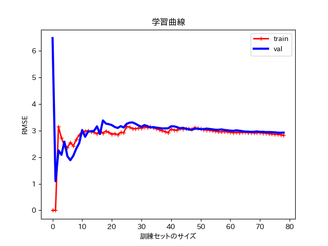
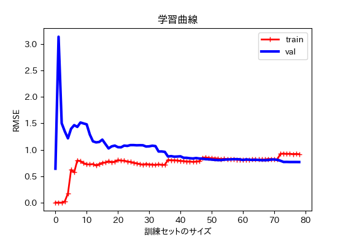
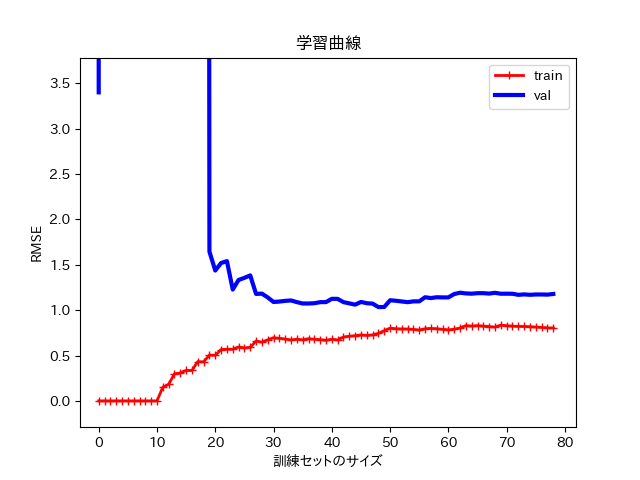

学習曲線¶
学習曲線とは？¶
多項式回帰のところで，どの程度の次数が適正なのか， 調べることが重要であると伝えました．
それを調べるために学習曲線というものがあります．
学習曲線は，テストデータと訓練データで訓練サイズごとのRMSEの値を計算し，グラフにしたものです．
学習曲線は以下のコードで確認することができます．
学習曲線（learning_curve.py）¶
import matplotlib.pyplot as plt
import numpy as np
from sklearn.metrics import mean_squared_error
from sklearn.model_selection import train_test_split
from sklearn import linear_model
def plot_learning_curves(model, X, y):
X_train, X_val, y_train, y_val = train_test_split(X, y, test_size = 0.2)
train_errors, val_errors = [], []
for m in range(1, len(X_train)):
model.fit(X_train[:m], y_train[:m])
y_train_predict = model.predict(X_train[:m])
y_val_predict = model.predict(X_val[:m])
train_errors.append(mean_squared_error(y_train_predict, y_train[:m]))
val_errors.append(mean_squared_error(y_val_predict, y_val[:m]))
plt.plot(np.sqrt(train_errors), "r-+", linewidth = 2, label = "train")
plt.plot(np.sqrt(val_errors), "b-", linewidth = 3, label = "val")
m = 100
X = 6 * np.random.rand(m, 1)
y = -1 * X**2 + 6 * X + 1 + np.random.randn(m, 1)
lin_reg = linear_model.LinearRegression()
import matplotlib as mpl
mpl.rcParams['font.family'] = 'IPAPGothic'
# mpl.rcParams['font.family'] = 'AppleGothic'
mpl.use('Agg')
plot_learning_curves(lin_reg, X, y)
plt.title('学習曲線')
plt.xlabel('次数')
plt.ylabel('RMSE')
plt.legend()
plt.show()
上のコードを実行すると，下のような学習曲線が出てきます．
{kind=link}
この学習曲線は直線（一次式）における学習曲線です． trainとは，訓練データのことで，valはテストデータのことです．
両方の曲線が一定の水準に達しともに非常に接近していますが，全体として誤差（RMSE）が大きいため 典型的な過少適合です．
次に，2次関数における学習曲線を確認してみます．
二次関数における学習曲線（learning_curve_2.py）¶
import matplotlib.pyplot as plt
import numpy as np
from sklearn.metrics import mean_squared_error
from sklearn.model_selection import train_test_split
from sklearn import linear_model
def plot_learning_curves(model, X, y):
X_train, X_val, y_train, y_val = train_test_split(X, y, test_size = 0.2)
train_errors, val_errors = [], []
for m in range(1, len(X_train)):
model.fit(X_train[:m], y_train[:m])
y_train_predict = model.predict(X_train[:m])
y_val_predict = model.predict(X_val[:m])
train_errors.append(mean_squared_error(y_train_predict, y_train[:m]))
val_errors.append(mean_squared_error(y_val_predict, y_val[:m]))
plt.plot(np.sqrt(train_errors), "r-+", linewidth = 2, label = "train")
plt.plot(np.sqrt(val_errors), "b-", linewidth = 3, label = "val")
m = 100
X = 6 * np.random.rand(m, 1)
y = -1 * X**2 + 6 * X + 1 + np.random.randn(m, 1)
from sklearn.preprocessing import PolynomialFeatures
from sklearn import linear_model
poly_features = PolynomialFeatures(degree = 2, include_bias = False)
X_poly = poly_features.fit_transform(X)
from sklearn.pipeline import Pipeline
polynomial_regression = Pipeline([
("poly_features", PolynomialFeatures(degree=2, include_bias = False)),
("lin_reg", linear_model.LinearRegression()),
])
import matplotlib as mpl
mpl.rcParams['font.family'] = 'IPAPGothic'
# mpl.rcParams['font.family'] = 'AppleGothic'
mpl.use('Agg')
plot_learning_curves(polynomial_regression, X, y)
plt.title('学習曲線')
plt.xlabel('訓練セットのサイズ')
plt.ylabel('RMSE')
plt.legend()
plt.show()
plt.close()
両方の曲線がある程度の水準で接近しており，全体としての誤差（RMSE）も小さいため 他のものよりも程よく適合していると考えられます．
{kind=link}
最後に，10次関数における学習曲線を確認してみます．
{kind=link}
直線における学習曲線よりも，訓練誤差（RMSE）がかなり小さく，また二つの曲線の間に大きな差がある． 特に，テストデータに対しての性能よりも，訓練データに対する性能がかなり高く，典型的な過学習です．